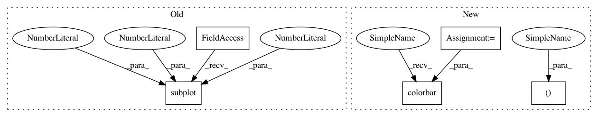

24d6f5e42d775949e191122091826eefa7bf1246,docs/examples/plot_vocal_separation.py,,,#,34
Before Change
// sphinx_gallery_thumbnail_number = 2
plt.figure(figsize=(12, 8))
plt.subplot(3, 1, 1)
librosa.display.specshow(librosa.amplitude_to_db(S_full[:, idx], ref=np.max),
y_axis="log", sr=sr)
plt.title("Full spectrum")
plt.colorbar()
After Change
//////////////////////////////////////////////////////////////////////////////
// Plot a 5-second slice of the spectrum
idx = slice(*librosa.time_to_frames([10, 15], sr=sr))
fig, ax = plt.subplots()
img = librosa.display.specshow(librosa.amplitude_to_db(S_full[:, idx], ref=np.max),
y_axis="log", x_axis="time", sr=sr, ax=ax)
fig.colorbar(img, ax=ax)
//////////////////////////////////////////////////////////////////////////////////////////////////////////////////////
// The wiggly lines above are due to the vocal component.
// Our goal is to separate them from the accompanying
In pattern: SUPERPATTERN
Frequency: 4
Non-data size: 5
Instances
Project Name: librosa/librosa
Commit Name: 24d6f5e42d775949e191122091826eefa7bf1246
Time: 2020-06-27
Author: bmcfee@users.noreply.github.com
File Name: docs/examples/plot_vocal_separation.py
Class Name:
Method Name:
Project Name: librosa/librosa
Commit Name: 24d6f5e42d775949e191122091826eefa7bf1246
Time: 2020-06-27
Author: bmcfee@users.noreply.github.com
File Name: docs/examples/plot_viterbi.py
Class Name:
Method Name:
Project Name: librosa/librosa
Commit Name: 24d6f5e42d775949e191122091826eefa7bf1246
Time: 2020-06-27
Author: bmcfee@users.noreply.github.com
File Name: docs/examples/plot_vocal_separation.py
Class Name:
Method Name:
Project Name: matplotlib/matplotlib
Commit Name: 27c2dc10bb9f83026db6378c151d8108fc044af8
Time: 2018-06-27
Author: jklymak@gmail.com
File Name: examples/images_contours_and_fields/contour_image.py
Class Name:
Method Name:
Project Name: matplotlib/matplotlib
Commit Name: ec5e8863a6352da673b55cb971529f38278cf64e
Time: 2018-03-26
Author: pmhobson@gmail.com
File Name: examples/images_contours_and_fields/contour_image.py
Class Name:
Method Name: